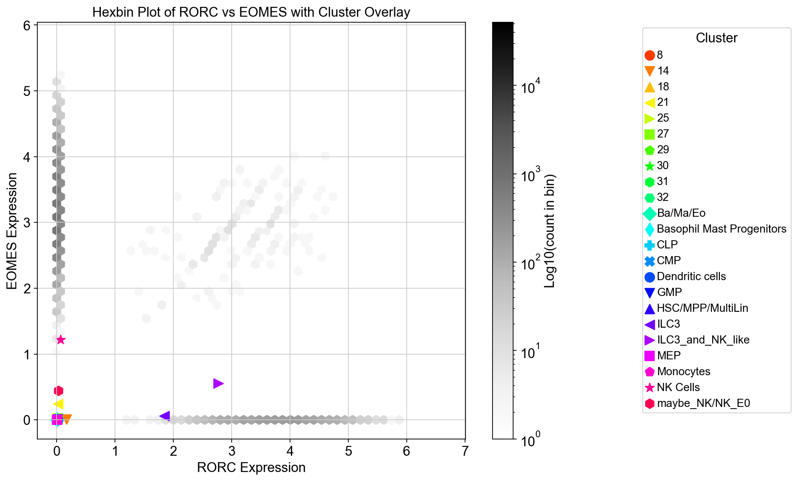

My References and Figures
Welcome to my references & figures page! This is a living document, so I'll keep updating
it with the most recent information. Feel free to bookmark or revisit using the QR code
on my poster.
References
-
Ullmo I, Koksal N, Ang HYK, Brady HJM. In Vitro Development of Mouse and Human NK Cells from Hematopoietic Progenitor Cells.
Methods Mol Biol. 2022;2463:31-45.
doi: 10.1007/978-1-0716-2160-8_3.
PMID: 35344165.
-
Lim AI, Li Y, Lopez-Lastra S, Stadhouders R, Paul F, Casrouge A, Serafini N, Puel A, Bustamante J, Surace L, Masse-Ranson G, David E, Strick-Marchand H, Le Bourhis L, Cocchi R, Topazio D, Graziano P, Muscarella LA, Rogge L, Norel X, Sallenave JM, Allez M, Graf T, Hendriks RW, Casanova JL, Amit I, Yssel H, Di Santo JP. Systemic Human ILC Precursors Provide a Substrate for Tissue ILC Differentiation.
Cell. 2017 Mar 9;168(6):1086-1100.e10.
doi: 10.1016/j.cell.2017.02.021.
PMID: 28283063.
-
Xu W, Cherrier DE, Chea S, Vosshenrich C, Serafini N, Petit M, Liu P, Golub R, Di Santo JP. An Id2RFP-Reporter Mouse Redefines Innate Lymphoid Cell Precursor Potentials.
Immunity. 2019 Apr 16;50(4):1054-1068.e3.
doi: 10.1016/j.immuni.2019.02.022.
PMID: 30926235; PMCID: PMC6477155.
-
Surace L, Doisne JM, Croft CA, Thaller A, Escoll P, Marie S, Petrosemoli N, Guillemot V, Dardalhon V, Topazio D, Cama A, Buchrieser C, Taylor N, Amit I, Musumeci O, Di Santo JP. Dichotomous metabolic networks govern human ILC2 proliferation and function.
Nat Immunol. 2021 Nov;22(11):1367-1374.
doi: 10.1038/s41590-021-01043-8.
PMID: 34686862; PMCID: PMC8553616.
-
Wolf FA, Hamey FK, Plass M, Solana J, Dahlin JS, Göttgens B, Rajewsky N, Simon L, Theis FJ. PAGA: graph abstraction reconciles clustering with trajectory inference through a topology preserving map of single cells.
Genome Biol. 2019 Mar 19;20(1):59.
doi: 10.1186/s13059-019-1663-x.
PMID: 30890159; PMCID: PMC6425583.
-
Bergen V, Lange M, Peidli S, Wolf FA, Theis FJ. Generalizing RNA velocity to transient cell states through dynamical modeling.
Nat Biotechnol. 2020 Dec;38(12):1408-1414.
doi: 10.1038/s41587-020-0591-3.
PMID: 32747759.
-
Zheng SC, Stein-O'Brien G, Boukas L, Goff LA, Hansen KD. Pumping the brakes on RNA velocity by understanding and interpreting RNA velocity estimates.
Genome Biol. 2023 Oct 26;24(1):246.
doi: 10.1186/s13059-023-03065-x.
PMID: 37885016; PMCID: PMC10601342.
Figures
Hexbin plots show coexpression of RORC and EOMES in TIDEs

Hexbin plots overlayed with a dot plot which shows mean expression per cluster (different dots indicate different cell types as shown in the legend).
ILC3_and_NK_like = 'TIDEs' and maybe_NK/NK_E0 = 'Early NKs'.
Hexbin plots for coexpression of NCAM1 and EOMES
ILC3s have 0 expression for EOMES while TIDEs and Early NKs show similar mean expressions for EOMES and NCAM1.